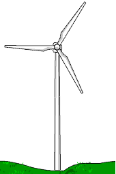
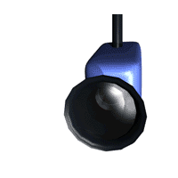

- Beneficia a las energías renovables: Posibilita nuevas formas de obtener y almacenar energía. Además abarata las placas solares y hace que sean más eficiente.

- Amplía los límites de la electrónica: A diferencia de los microchips permitirán contruir circuitos muy prercisos a niverl atómico.
- Permite una medicina más efectiva: Se podrán desbloquear arterias, atacar células de forma selectiva, reparar genes dañados o realizar cirugías más rápidas y precisas.
Desventajas de la nanotecnología
- Amenaza el entorno: Este tipo de tecnología podría causar efectos negativos en el medio ambiente al generar nuevas toxinas y contaminantes
- Impacta en el mercado laboral: Los materiales obsoletos y los cambios en los procesos de producción podrían destruir empleos, pero esta tecnología crearía otros.
- Compromete la seguridad: Las propiedades de esta tecnología podrían facilitar el espionaje, la producción de nanoarmas y de balas inteligentes.
